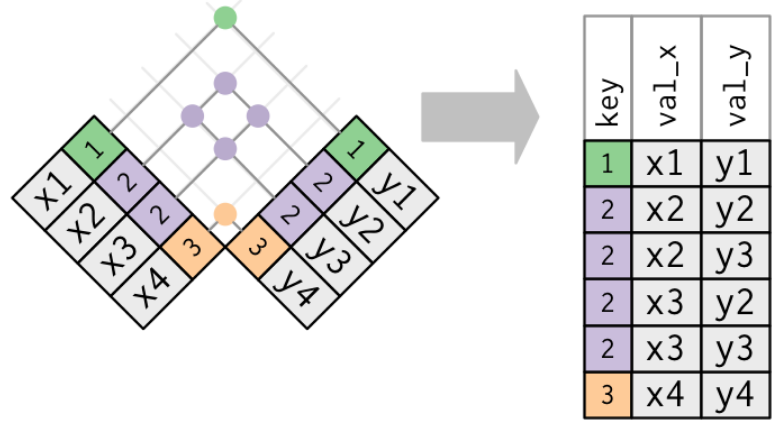

library(dplyr)Unidad 2: Procesamiento de datos
Descargar este documento en PDF
Gestión de datos con el Paquete dplyr
El paquete dplyr es parte del universo tidyverse que fue desarrollado por Hadley Wickham a partir de optimizar una versión del paquete plyr.
La contribución significativa del paquete es proporcionar una “gramática” (funciones-verbos) para la manipulación y operaciones de datos que lo hace más fácil de entender.
Las funciones clave del paquete, responden a las siguientes acciones (verbos):
select(): devuelve un conjunto de columnas (variables)rename(): renombra variables en una conjunto de datosfilter(): devuelve un conjunto de filas (observaciones) según una o varias condiciones lógicasarrange(): reordena filas de un conjunto de datosmutate(): añade nuevas variables/columnas o transforma variables existentessummarise()/summarize(): genera resúmenes estadísticos de diferentes variables en el conjunto de datos.group_by(): agrupa un conjunto de filas seleccionado, en un conjunto de filas de resumen de acuerdo con los valores de una o más columnas o expresiones.count(): contabiliza valores que se repiten, es decir genera tabla de frecuencias.
Argumentos comúnes en las funciones dplyr
Todas las funciones, básicamente, tienen en común una serie de argumentos.
El primer argumento es el nombre del conjunto de datos (objeto donde esta nuestra tabla de datos)
Los otros argumentos describen que hacer con el conjunto de datos especificado en el primer argumento, podemos referirnos a las columnas en el objeto directamente sin utilizar el operador $, es decir sólo con el nombre de la columna/variable.
El valor de retorno es un nuevo conjunto de datos.
Los conjunto de datos deben estar bien organizados/estructurados, es decir debe existir una observación por columna y, cada columna representar una variable, medida o característica de esa observación. Es decir, debe cumplir con tidy data.
Activación del paquete
dplyr está incluído en el paquete tidyverse, por lo que se encuentra disponible si tenemos activado a este último.
También se puede activar en forma independiente, aunque no es necesario si ya activamos tidyverse:
Conjunto de datos para ejemplo
Visualizar y entender el funcionamiento de estos “verbos” de manipulación es posible si ejemplificamos su aplicación. Por este motivo vamos a leer un conjunto de datos que servirá para ejercitar las funciones del paquete.
datos <- read_csv("datos/noti-vih.csv") # asignamos la lectura a datos
head(datos) # mostramos las 6 primeras observaciones# A tibble: 6 × 4
jurisdiccion año casos pob
<chr> <dbl> <dbl> <dbl>
1 Buenos Aires 2015 1513 16626374
2 Buenos Aires 2016 957 16789474
3 CABA 2015 901 3054237
4 CABA 2016 427 3050000
5 Catamarca 2015 69 396552
6 Catamarca 2016 51 401575La tabla de datos “noti-vih.csv” contiene datos de notificación de vih por jurisdicción de Argentina para los años 2015 y 2016.
Función select()
Esta función selecciona las variables que especificamos devolviendo un conjunto de datos “recortado por columna”.
select() utiliza un minilenguaje conciso que facilita hacer referencia a las variables según su nombre, ubicación, condición o tipo.
Alguno de sus operadores son:
:para seleccionar un rango de variables consecutivas.-para evitar seleccionar la variable que sigue al signo!para tomar el complemento de un conjunto de variables.
Veamos algunas aplicaciones de estas “ayudas” para hacer selecciones.
Todas las variables menos pob
datos |>
select(-pob)# A tibble: 48 × 3
jurisdiccion año casos
<chr> <dbl> <dbl>
1 Buenos Aires 2015 1513
2 Buenos Aires 2016 957
3 CABA 2015 901
4 CABA 2016 427
5 Catamarca 2015 69
6 Catamarca 2016 51
7 Chaco 2015 15
8 Chaco 2016 9
9 Chubut 2015 110
10 Chubut 2016 89
# ℹ 38 more rowsOtra forma para el mismo resultado anterior (mediante el operador rango :)
datos |>
select(jurisdiccion:casos)# A tibble: 48 × 3
jurisdiccion año casos
<chr> <dbl> <dbl>
1 Buenos Aires 2015 1513
2 Buenos Aires 2016 957
3 CABA 2015 901
4 CABA 2016 427
5 Catamarca 2015 69
6 Catamarca 2016 51
7 Chaco 2015 15
8 Chaco 2016 9
9 Chubut 2015 110
10 Chubut 2016 89
# ℹ 38 more rowsLas variables jurisdiccion y casos
datos |>
select(jurisdiccion, casos)# A tibble: 48 × 2
jurisdiccion casos
<chr> <dbl>
1 Buenos Aires 1513
2 Buenos Aires 957
3 CABA 901
4 CABA 427
5 Catamarca 69
6 Catamarca 51
7 Chaco 15
8 Chaco 9
9 Chubut 110
10 Chubut 89
# ℹ 38 more rowsOtra forma para el mismo resultado anterior (mediante números de columna):
datos |>
select(1, 3)# A tibble: 48 × 2
jurisdiccion casos
<chr> <dbl>
1 Buenos Aires 1513
2 Buenos Aires 957
3 CABA 901
4 CABA 427
5 Catamarca 69
6 Catamarca 51
7 Chaco 15
8 Chaco 9
9 Chubut 110
10 Chubut 89
# ℹ 38 more rowsTodas las variables pasando año a la primera columna
datos |>
select("año", everything())# A tibble: 48 × 4
año jurisdiccion casos pob
<dbl> <chr> <dbl> <dbl>
1 2015 Buenos Aires 1513 16626374
2 2016 Buenos Aires 957 16789474
3 2015 CABA 901 3054237
4 2016 CABA 427 3050000
5 2015 Catamarca 69 396552
6 2016 Catamarca 51 401575
7 2015 Chaco 15 1153846
8 2016 Chaco 9 1125000
9 2015 Chubut 110 567010
10 2016 Chubut 89 577922
# ℹ 38 more rowsEsta última función everything(), pasada como argumento, es una de las posibles funciones llamadas “ayudantes de selección”, entre las cuales se encuentra:
starts_with(): selecciona todas las columnas que comiencen con el patrón indicado.ends_with(): selecciona todas las columnas que terminen con el patrón indicado.contains(): selecciona las columnas que posean el patrón indicado.matches(): similar acontains(), pero permite poner una expresión regular.all_of(): selecciona las variables pasadas en un vector (todos los nombres deben estar presentes o devuelve un error)any_of(): idem anterior excepto que no se genera ningún error para los nombres que no existen.num_range(): selecciona variables con nombre combinados con caracteres y números (ejemplo: num_range(“x”, 1:3) selecciona las variables x1, x2 y x3.where(): aplica una función a todas las variables y selecciona aquellas para las cuales la función regresa TRUE (por ejemplo:is.numeric()para seleccionar todas las variables numéricas)group_cols(): selecciona todas las columnas de agrupación.
Todas estas funciones son muy útiles a la hora de seleccionar el conjunto de variables necesarias no solo para un select() básico sino también cuando necesitemos aplicar operaciones simultáneas y/o pivotear tablas de datos que necesiten garantizar formato ordenado (tidy-data).
Función rename()
Esta función es una extensión de select(), dado que esta última permite cambiar el nombre de variables pero no es muy útil porque descarta todas las variables que no se mencionan explícitamente. En cambio rename() renombra variables mientras que mantiene las demás no mencionadas.
Por ejemplo, cambiamos el nombre de la variable pob por población.
datos |>
rename("población" = pob)# A tibble: 48 × 4
jurisdiccion año casos población
<chr> <dbl> <dbl> <dbl>
1 Buenos Aires 2015 1513 16626374
2 Buenos Aires 2016 957 16789474
3 CABA 2015 901 3054237
4 CABA 2016 427 3050000
5 Catamarca 2015 69 396552
6 Catamarca 2016 51 401575
7 Chaco 2015 15 1153846
8 Chaco 2016 9 1125000
9 Chubut 2015 110 567010
10 Chubut 2016 89 577922
# ℹ 38 more rowsFunción filter()
Así como la función select() es utilizada para seleccionar columnas, la función filter() hace lo propio con las filas del conjunto de datos, produciendo un subconjunto de observaciones.
Veamos un ejemplo sencillo sobre nuestros datos:
datos |>
filter(jurisdiccion == "Tucuman")# A tibble: 2 × 4
jurisdiccion año casos pob
<chr> <dbl> <dbl> <dbl>
1 Tucuman 2015 258 1592593
2 Tucuman 2016 246 1618421Utiliza los mismos operadores de comparación propios del lenguaje R
| Comparación | |
|---|---|
| < | menor a |
| > | mayor a |
| == | igual a |
| <= | menor o igual a |
| >= | mayor o igual a |
| != | no igual a |
| %in% | es parte de |
| is.na | es NA |
| !is.na | no es NA |
Lo mismo con los operadores lógicos que se utilizan como conectores entre las expresiones.
| Lógicos | |
|---|---|
| & | AND booleano |
| | | OR booleano |
| xor | OR exclusivo |
| ! | NOT |
| any | cualquier TRUE |
| all | todos TRUE |
Cuando usamos múltiples argumentos separados por coma dentro de filter() se combinan con un conector AND, es decir cada expresión debe ser verdadera para que una fila sea incluida en la salida.
Por ejemplo:
Filtramos a las observaciones que cumplan con la condición que casos sea mayor a 100 y población sea menor a 1000000
datos |>
filter(casos > 100, pob < 1000000)# A tibble: 7 × 4
jurisdiccion año casos pob
<chr> <dbl> <dbl> <dbl>
1 Chubut 2015 110 567010
2 Jujuy 2015 160 727273
3 Jujuy 2016 133 734807
4 Neuquen 2015 109 619318
5 Neuquen 2016 101 627329
6 Rio Negro 2015 112 700000
7 Rio Negro 2016 105 709459Para combinaciones dentro de una misma variable debemos utilizar el conector OR (|) o más útil el operador %in%.
Filtramos a las jurisdicciones “Buenos Aires” y “La Pampa”
datos |>
filter(jurisdiccion == "Buenos Aires" | jurisdiccion == "La Pampa")# A tibble: 4 × 4
jurisdiccion año casos pob
<chr> <dbl> <dbl> <dbl>
1 Buenos Aires 2015 1513 16626374
2 Buenos Aires 2016 957 16789474
3 La Pampa 2015 57 343373
4 La Pampa 2016 67 345361datos |>
filter(jurisdiccion %in% c("Buenos Aires", "La Pampa"))# A tibble: 4 × 4
jurisdiccion año casos pob
<chr> <dbl> <dbl> <dbl>
1 Buenos Aires 2015 1513 16626374
2 Buenos Aires 2016 957 16789474
3 La Pampa 2015 57 343373
4 La Pampa 2016 67 345361Filtramos las observaciones de 2016 con casos mayores a 200 utilizando el conector AND (&). Es el mismo resultado que si utilizamos una coma.
datos |>
filter(año == "2016" & casos > 200)# A tibble: 6 × 4
jurisdiccion año casos pob
<chr> <dbl> <dbl> <dbl>
1 Buenos Aires 2016 957 16789474
2 CABA 2016 427 3050000
3 Cordoba 2016 368 3607843
4 Mendoza 2016 254 1909774
5 Salta 2016 230 1352941
6 Tucuman 2016 246 1618421Filtramos las observaciones inversas a la anterior mediante xor(), que selecciona los valores de año y casos exclusivos (es decir que no se den ambos en TRUE).
datos |>
filter(xor(año == "2016", casos > 200))# A tibble: 25 × 4
jurisdiccion año casos pob
<chr> <dbl> <dbl> <dbl>
1 Buenos Aires 2015 1513 16626374
2 CABA 2015 901 3054237
3 Catamarca 2016 51 401575
4 Chaco 2016 9 1125000
5 Chubut 2016 89 577922
6 Cordoba 2015 468 3572519
7 Corrientes 2016 99 1076087
8 Entre Rios 2016 109 1329268
9 Formosa 2016 60 582524
10 Jujuy 2016 133 734807
# ℹ 15 more rowsFunción arrange()
La función arrange() se utiliza para ordenar las filas de un conjunto de datos de acuerdo a una o varias columnas/variables. Por defecto, el ordenamiento es ascendente alfanumérico.
Ordenamos la tabla datos por la variable pob (forma ascendente predeterminada):
datos |>
arrange(pob)# A tibble: 48 × 4
jurisdiccion año casos pob
<chr> <dbl> <dbl> <dbl>
1 Tierra del Fuego 2015 36 152542
2 Tierra del Fuego 2016 34 156682
3 Santa Cruz 2015 65 320197
4 Santa Cruz 2016 59 329609
5 La Pampa 2015 57 343373
6 La Pampa 2016 67 345361
7 La Rioja 2015 41 369369
8 La Rioja 2016 6 375000
9 Catamarca 2015 69 396552
10 Catamarca 2016 51 401575
# ℹ 38 more rowsPara ordenar en forma descendente podemos utilizar desc() dentro de los argumentos de arrange():
datos |>
arrange(desc(pob))# A tibble: 48 × 4
jurisdiccion año casos pob
<chr> <dbl> <dbl> <dbl>
1 Buenos Aires 2016 957 16789474
2 Buenos Aires 2015 1513 16626374
3 Cordoba 2016 368 3607843
4 Cordoba 2015 468 3572519
5 Santa Fe 2016 170 3400000
6 Santa Fe 2015 301 3382022
7 CABA 2015 901 3054237
8 CABA 2016 427 3050000
9 Mendoza 2016 254 1909774
10 Mendoza 2015 316 1880952
# ℹ 38 more rowsPodemos combinar ordenamientos. Por ejemplo, en forma alfabética ascendente para jusrisdiccion y luego numérica descendente para casos.
datos |>
arrange(jurisdiccion, desc(casos))# A tibble: 48 × 4
jurisdiccion año casos pob
<chr> <dbl> <dbl> <dbl>
1 Buenos Aires 2015 1513 16626374
2 Buenos Aires 2016 957 16789474
3 CABA 2015 901 3054237
4 CABA 2016 427 3050000
5 Catamarca 2015 69 396552
6 Catamarca 2016 51 401575
7 Chaco 2015 15 1153846
8 Chaco 2016 9 1125000
9 Chubut 2015 110 567010
10 Chubut 2016 89 577922
# ℹ 38 more rowsFunción mutate()
Esta función nos proporciona computar tranformaciones de variables en un conjunto de datos. A menudo, tendremos la necesidad de modificar variables existentes o crear nuevas variables que se calculan a partir de las que tenemos, mutate() nos ofrece una interface clara para realizar este tipo de operaciones.
Por ejemplo, nos puede interesar calcular tasas crudas para cada jurisdicción y año, en función de los casos y el total de población.
datos |>
mutate(tasa = casos/pob*100000)# A tibble: 48 × 5
jurisdiccion año casos pob tasa
<chr> <dbl> <dbl> <dbl> <dbl>
1 Buenos Aires 2015 1513 16626374 9.10
2 Buenos Aires 2016 957 16789474 5.70
3 CABA 2015 901 3054237 29.5
4 CABA 2016 427 3050000 14
5 Catamarca 2015 69 396552 17.4
6 Catamarca 2016 51 401575 12.7
7 Chaco 2015 15 1153846 1.30
8 Chaco 2016 9 1125000 0.8
9 Chubut 2015 110 567010 19.4
10 Chubut 2016 89 577922 15.4
# ℹ 38 more rowsObservemos que la función realiza el cálculo (en este caso tasas crudas por 100000 habitantes) e incorpora una nueva variable por cada observación con el resultado.
También se pueden construir múltiples variables en la misma expresión, solamente separadas por comas.
datos |>
mutate(tasaxcien_mil = casos/pob*100000,
tasaxdiez_mil = casos/pob*10000)# A tibble: 48 × 6
jurisdiccion año casos pob tasaxcien_mil tasaxdiez_mil
<chr> <dbl> <dbl> <dbl> <dbl> <dbl>
1 Buenos Aires 2015 1513 16626374 9.10 0.910
2 Buenos Aires 2016 957 16789474 5.70 0.570
3 CABA 2015 901 3054237 29.5 2.95
4 CABA 2016 427 3050000 14 1.4
5 Catamarca 2015 69 396552 17.4 1.74
6 Catamarca 2016 51 401575 12.7 1.27
7 Chaco 2015 15 1153846 1.30 0.130
8 Chaco 2016 9 1125000 0.8 0.08
9 Chubut 2015 110 567010 19.4 1.94
10 Chubut 2016 89 577922 15.4 1.54
# ℹ 38 more rowsSi necesitemos que estas dos nuevas variables queden dentro de la tabla de datos y no solo mostrarla en consola como hasta ahora, debemos utilizar el operador de asignación:
datos <- datos |>
mutate(tasaxcien_mil = casos/pob*100000,
tasaxdiez_mil = casos/pob*10000)La propiedad imprescindible es que la función debe poder vectorizar: debe tomar un vector de valores como entrada, y devolver un vector con el mismo número de valores que la salida.
No hay forma de enumerar todas las funciones posibles que se podría usar, pero mencionaremos algunas que pueden ser útiles:
Operadores aritméticos: +, -, *, /, ^.
Aritmética modular: %/% (división entera) y %% (resto), donde \(x == y * (x \ \%/\% \ y) + (x\ \%\% \ y)\). La aritmética modular es una herramienta útil porque te permite dividir números enteros en porciones.
Funciones matemáticas:
log(),log2(),log10(),exp(),sqrt(),abs(), etcValores acumulados: R proporciona funciones para ejecutar sumas, productos, mínimos y máximos acumulados:
cumsum(),cumprod(),cummin(),cummax(); y dplyr proporcionacummean()para promedios acumulados.Clasificaciones (ranking): hay una serie de funciones de clasificación, por ejemplo
min_rank(). Genera el tipo de clasificación habitual (1º, 2º, etc). El valor predeterminado relaciona los valores más pequeños a rangos pequeños; podemos usardesc(x)para invertir la relación (valores más grandes a rangos más pequeños)
Si utilizamos el mismo nombre de una variable incluída dentro de la tabla de datos, estaremos sobrescribiendola (se usa cuando transformamos una variable, por ejemplo: le cambiamos su tipo de character a factor). Para que la variable sea nueva debe nombrarse con un nombre que no exista previamente dentro de la tabla de datos.
Funciones condicionales
Dentro un mutate(), algunas veces vamos a necesitar agrupar, agregar o discretizar variables continuas donde generemos variables dicotómicas o politómicas.
Estas funciones que llamaremos “condicionales”, dado que utilizan condiciones para decidir que valor tomar, no se limitan a la tarea de construir agrupamientos de variables cuantitativas sino que sirven para cualquier situación donde a partir de una o más condiciones se produzcan una o más valores como respuesta.
Condicional simple - función if_else()
Para salidas dicotómicas tenemos la función condicional if_else() derivada de la simplificación del IF condicional que existe en todos los lenguajes de programación.
Supongamos que creamos una nueva variable dentro del dataframe datos que se llama variable_nueva de tipo cualitativa y queremos que la misma tome valores a partir del cumplimiento de una condición de una variable cuantitativa existente denominada var1.
Si los valores de var1 son mayores a 10, entonces variable_nueva, tomará el valor “mayor a 10”, en caso contrario, tomará el valor “menor o igual a 10”
datos <- datos |>
mutate(variable_nueva = if_else(condition = var1 > 10,
true = "mayor a 10",
false = "menor o igual a 10"))if_else() tiene tres argumentos obligatorios, el primero siempre es una condición, el segundo y el tercero son los valores que tomará la nueva variable si esa condición se cumple o no se cumple.
Habitualmente decimos que en este proceso dicotomizamos una variable, dado que el resultado posible consta siempre de 2 valores.
Los valores de salida de esta función pueden ser de variado tipo (caracter, numerico o logico) aunque si estamos discretizando una variable cuantitativa generalmente construimos una variable resultado cualitativa ordinal. Es común que esta variable salida sea tipo character (observar que las nuevas categorías van encerradas entre comillas).
Ahora bien, al ser ordinal estas categorías de la variable_nueva deben “ordenarse” en la forma de los valores de la variable, pero el lenguaje R no sabe con que estamos trabajando y respeta siempre el ordenamiento alfanumérico. Por lo tanto, en este ejemplo las categorías se van a estar ordenando al reves del orden numérico natural (de menor a mayor).
“mayor a 10” se ordena alfabéticamente antes de “menor o igual a 10”, porque luego del empate de las letras m, le siguen la a en el primer caso y la e en el segundo.
Para ordenar estas categorías debemos transformar la variable de caracter a factor. Esto se puede hacer en un solo paso dentro del mutate:
datos <- datos |>
mutate(variable_nueva = if_else(condition = var1 > 10,
true = "mayor a 10",
false = "menor o igual a 10"),
variable_nueva = factor(variable_nueva,
levels = c("menor o igual a 10",
"mayor a 10")))Otra forma más artesanal, igualmente válido, es “forzar” el ordenamiento con las categorías así:
datos <- datos |>
mutate(variable_nueva = if_else(condition = var1 > 10,
true = "2.mayor a 10",
false = "1.menor o igual a 10"))Aquí agregamos números iniciales a las etiquetas de las categorías para darle el orden que deseamos, sin necesidad de convertir a factor.
Condicional multiple
En salidas politómicas a partir de variables cuantitativas tenemos varias opciones dependiendo de si los intervalos de clase a construir son regulares o irregulares.
Función cut_interval()
tidyverse ofrece la función cut_interval() para la creación de intervalos regulares.
Es una adptación de la función cut() de R base para tidy data y sus argumentos son similares.
datos <- datos |>
mutate(grupo_var = cut_interval(x = var1,
length = 10,
right = T,
labels = T,
ordered_result = F))Los argumentos obligatorios y opcionales de la función cut() son:
x: [obligatorio] El conjunto de datos numéricos de entrada (variable cuantitativa continua)
length: [obligatorio] la longitud de cada intervalo regular
right: [opcional] Indica si los intervalos son cerrados a la derecha o viceversa. Por defecto vale TRUE (cerrados a derecha)
labels: [opcional] Etiquetas de los intervalos automáticas o numéricas. Valor predeterminado TRUE (intervalos matemáticos)
ordered_result: [opcional] - determina si el resultado es un factor ordenado. Por defecto vale FALSE (la salida es tipo caracter)
Los argumentos opcionales no son necesarios definirlos siempre y cuando los valores por defecto son los que sirven para la tarea.
Función case_when()
Cuando las condiciones no son simples, es decir, el resultado no es dicotómico y además los intervalos son irregulares, utilizamos la función case_when() que es una vectorización de la función if_else().
Supongamos que no queremos agrupar la variable en dos valores, sino en 3 grupos irregulares.
Esquema básico de funcionamiento:
# var1 es una variable cuantitativa de números enteros
datos <- datos |>
mutate(grupo_var = case_when(
var1 >= 0 & var1 < 25 ~ "Grupo1",
var1 > 24 & var1 < 65 ~ "Grupo 2",
var1 >= 65 ~ "Grupo 3"))Existe una condición por cada grupo creado, como si fuese un if_else() donde el valor declarado siempre es el verdadero. Se utilizan operadores de comparación como mayor ( > ), menor ( < ) y/o igual ( = ) y conectores lógicos como & ( AND ). En cada línea va una virgulilla similar a la usada en la sintaxis formula ( ~ ) y luego la etiqueta que tomarán las observaciones que cumplan con esa condición en la nueva variable (grupo_var).
Esta evaluación es secuencial y su funcionamiento provoca que el usuario del lenguaje tenga el control de lo que esta sucediendo, por lo que cualquier mala definición de las condiciones puede provocar resultados incorrectos.
Si incorporamos el argumento .default podemos indicar que valor toma si no se cumple ninguna de las condiciones anteriores.
Por ejemplo, podríamos tener algun valor perdido (NA) en var1 y queremos que la variable grupo_var etiquete esos valores perdidos como “Sin dato”:
# var1 es una variable cuantitativa de números enteros con algun valor NA
datos <- datos |>
mutate(grupo_var = case_when(
var1 >= 0 & var1 < 25 ~ "Grupo1",
var1 > 24 & var1 < 65 ~ "Grupo 2",
var1 >= 65 ~ "Grupo 3",
.default = "Sin dato"))Las salidas son de tipo carácter (chr) y debemos manejar el ordenamiento de las etiquetas como vimos anteriormente, por medio de factores o comenzando con caracteres ordenados alfabeticamente.
Para simplificar el trabajo de estos intervalos de clase irregulares y no provocar errores en la confección de las condiciones, tidyverse tiene a la función between().
Intervalos - función between()
Báicamente opera como un atajo para condiciones de intervalos. Define dentro de los argumentos los límites inferior y superior de un intervalo y se utiliza dentro de una función de condición tipo if_else() o case_when().
Aplicado sobre el ejemplo anterior se vería así:
# var1 es una variable cuantitativa de números enteros con algun valor NA
datos <- datos |>
mutate(grupo_var = case_when(
between(var1, 0, 24) ~ "Grupo1",
between(var1, 25, 64) ~ "Grupo 2",
between(var1, 65, Inf) ~ "Grupo 3",
.default = "Sin dato"))Los valores declarados como límites quedan incluídos siempre dentro del intervalo (son cerrados ambos). También podemos utilizar valores reservados como Inf o -Inf cuando desconocemos con que valor máximo o mínimo nos vamos a encontrar en la variable cuantitativa original.
Ejemplos con variable edad
Tomemos un caso clásico como la variable edad medida en años, variable que generalmente tenemos en toda tabla de datos vinculada a personas. En este ejemplo la variable tiene 106 observaciones.
Una posibilidad es dicotomizarla usando el valor de la mediana que divide 2 dos partes toda la distribución.
datos |>
summarise(mediana = median(edad))# A tibble: 1 × 1
mediana
<dbl>
1 56Aplicando el valor 56 dentro de un if_else podriamos hacer:
datos <- datos |>
mutate(grupo_edad1 = if_else(condition = edad > 56,
true = "mayor a la mediana",
false = "menor o igual a la mediana"))
datos |>
count(grupo_edad1)# A tibble: 2 × 2
grupo_edad1 n
<chr> <int>
1 mayor a la mediana 52
2 menor o igual a la mediana 54Observamos en el conteo que grupo_edad1 se construyó adecuadamente pero el orden de los niveles no es correcto si queremos que siga el ordenamiento natural de edad (de menor a mayor).
Una de las formas que vimos es convertir a factor:
datos <- datos |>
mutate(grupo_edad1 = if_else(condition = edad > 56,
true = "mayor a la mediana",
false = "menor o igual a la mediana"),
grupo_edad1 = factor(grupo_edad1,
levels = c("menor o igual a la mediana",
"mayor a la mediana")))
datos |>
count(grupo_edad1)# A tibble: 2 × 2
grupo_edad1 n
<fct> <int>
1 menor o igual a la mediana 54
2 mayor a la mediana 52Vemos que en el conteo el formato de la variable ya no es chr sino fct y el orden de las etiquetas siguen la forma “menor a mayor”.
Otra forma es:
datos <- datos |>
mutate(grupo_edad1 = if_else(condition = edad > 56,
true = "2.mayor a la mediana",
false = "1.menor o igual a la mediana"))
datos |>
count(grupo_edad1)# A tibble: 2 × 2
grupo_edad1 n
<chr> <int>
1 1.menor o igual a la mediana 54
2 2.mayor a la mediana 52Si en cambio necesitamos que los grupos sean mas de dos y que estos intervalos de clase sean regulares, podemos usar cut_interval
datos <- datos |>
mutate(grupo_edad2 = cut_interval(x = edad,
length = 10))
datos |>
count(grupo_edad2)# A tibble: 8 × 2
grupo_edad2 n
<fct> <int>
1 [0,10] 3
2 (10,20] 3
3 (20,30] 2
4 (30,40] 3
5 (40,50] 13
6 (50,60] 52
7 (60,70] 27
8 (70,80] 3La salida muestra 8 grupos etarios con etiquetas ordenadas con notación matemática, donde un corchete indica que el límite del intervalo es cerrado, es decir contiene el valor y un paréntesis es abierto y no lo hace.Así es que el primer grupo va de 0 a 10 años y el segundo de 11 a 20.
Estos sucede así porque en forma predeterminada el argumento right está en TRUE. Veamos que pasa si lo cambiamos a FALSE:
datos <- datos |>
mutate(grupo_edad2 = cut_interval(x = edad,
length = 10,
right = F))
datos |>
count(grupo_edad2)# A tibble: 8 × 2
grupo_edad2 n
<fct> <int>
1 [0,10) 3
2 [10,20) 3
3 [20,30) 2
4 [30,40) 3
5 [40,50) 10
6 [50,60) 48
7 [60,70) 32
8 [70,80] 5En esta salida el primer grupo va de 0 a 9 y el segundo de 10 a 19.
Hasta ahora la variable grupo_edad2 es de tipo caracter, pero si deseamos que la salida sea factor podemos incorporar el argumento ordered_result en TRUE.
datos <- datos |>
mutate(grupo_edad2 = cut_interval(x = edad,
length = 10,
ordered_result = T))
datos |>
count(grupo_edad2)# A tibble: 8 × 2
grupo_edad2 n
<ord> <int>
1 [0,10] 3
2 (10,20] 3
3 (20,30] 2
4 (30,40] 3
5 (40,50] 13
6 (50,60] 52
7 (60,70] 27
8 (70,80] 3Construimos así una variable factor ordenada
Por último, con el argumento labels en FALSE hacemos que las etiquetas de los 8 grupos sean numéricas.
datos <- datos |>
mutate(grupo_edad2 = cut_interval(x = edad,
length = 10,
labels = F))
datos |>
count(grupo_edad2)# A tibble: 8 × 2
grupo_edad2 n
<int> <int>
1 1 3
2 2 3
3 3 2
4 4 3
5 5 13
6 6 52
7 7 27
8 8 3Otro ejemplo, podría ser aplicando case_when() donde discretizamos la edad en 4 grupos irregulares, forzando sus etiquetas para lograr el orden adecuado.
datos <- datos |>
mutate(grupo3 = case_when(
edad < 13 ~ "1.Niño",
edad > 12 & edad < 26 ~ "2.Adolescente",
edad > 25 & edad < 65 ~ "3.Adulto_joven",
edad > 64 ~ "4.Adulto_mayor"
))
datos |>
count(grupo3) # A tibble: 4 × 2
grupo3 n
<chr> <int>
1 1.Niño 3
2 2.Adolescente 5
3 3.Adulto_joven 86
4 4.Adulto_mayor 12Si no hubiesemos etiquetado con los numeros por delante el orden alfabético hacía que Niño fuese a parar al final del conteo.
De la misma forma pero más sencillo y controlado es:
datos <- datos |>
mutate(grupo3 = case_when(
between(edad, 0, 12) ~ "1.Niño",
between(edad, 13, 25) ~ "2.Adolescente",
between(edad, 26, 64) ~ "3.Adulto_joven",
between(edad, 65, Inf) ~ "4.Adulto_mayor"
))
datos |>
count(grupo3) # A tibble: 4 × 2
grupo3 n
<chr> <int>
1 1.Niño 3
2 2.Adolescente 5
3 3.Adulto_joven 86
4 4.Adulto_mayor 12Función summarise()
La función summarise() (se puede escribir también summarize()) resume variables de un conjunto de datos.
datos |>
summarise(promedio_casos = mean(casos),
casos_totales = sum(casos))# A tibble: 1 × 2
promedio_casos casos_totales
<dbl> <dbl>
1 192. 9211Su uso es muy interesante cuando la combinamos con group_by() (función que detallaremos luego). Esta situación permite estratificar los resultados por grupos específicos.
Por ejemplo, podemos agrupar el por año y simultáneamente aplicar el mismo summarise() anterior.
datos |>
group_by(año) |>
summarise(promedio_casos = mean(casos),
casos_totales = sum(casos))# A tibble: 2 × 3
año promedio_casos casos_totales
<dbl> <dbl> <dbl>
1 2015 224. 5369
2 2016 160. 3842El resultado es una tabla con dos filas, una para cada grupo (año 2015 y año 2016) con los valores promedio y casos totales respectivos.
Algunas de las funciones del R base que se pueden utilizar dentro de los argumentos de esta función son:
min()mínimomax()máximomean()mediamedian()medianavar()varianzasd()desvíosum()sumatoria
Otras funciones que se pueden incorporar las provee el mismo paquete dplyr, por ejemplo:
first()primer valor en el vectorlast()último valor en el vectorn()número de valores en el vectorn_distinct()números de valores distintos en el vector
Desde la versión 1.4.0 de dplyr la función summarise() incorpora un nuevo argumento para agrupamientos temporales. El argumento .by = trabaja igual que un group_by() previo pero lo hace solo para realizar el calculo definido dentro del resumen evitando que el dataframe de salida mantenga el agrupamiento.
La estructura básica de la función actualizada es:
datos |>
summarise(
var_resumen = funcion(var),
.by = var_grupo
)Aplicada en el ejemplo previo:
datos |>
summarise(promedio_casos = mean(casos),
casos_totales = sum(casos),
.by = año)# A tibble: 2 × 3
año promedio_casos casos_totales
<dbl> <dbl> <dbl>
1 2015 224. 5369
2 2016 160. 3842Función group_by()
Decíamos recién que la función group_by() es útil cuando trabaja conjuntamente con summarise() dado que agrupa un conjunto de filas seleccionado en un conjunto de filas de resumen de acuerdo con los valores de una o más columnas o expresiones.
Para ejemplificar su trabajo asociado obtendremos una nueva tabla con el cálculo de las tasas crudas para cada jurisdicción por año (similar al ejemplo de la aplicación de mutate():
datos |>
group_by(jurisdiccion, año) |>
summarise(tasa = casos/pob*100000)# A tibble: 48 × 3
# Groups: jurisdiccion [24]
jurisdiccion año tasa
<chr> <dbl> <dbl>
1 Buenos Aires 2015 9.10
2 Buenos Aires 2016 5.70
3 CABA 2015 29.5
4 CABA 2016 14
5 Catamarca 2015 17.4
6 Catamarca 2016 12.7
7 Chaco 2015 1.30
8 Chaco 2016 0.8
9 Chubut 2015 19.4
10 Chubut 2016 15.4
# ℹ 38 more rowsEn la mayoría de estos ejemplos la salida es directa, es decir no construimos nuevos objetos contenedores de los datos producidos y vemos los resultados en consola o en el visualizador de RStudio. Pero en muchas situaciones vamos a necesitar generar nuevos conjunto de datos con las transformaciones realizadas. Si en alguna de estas ocasiones llegamos a agrupar datos mediante group_by() y posteriormente necesitamos volver a tener la información desagrupada existe una función vinculada denominada ungroup() que vamos a necesitar aplicar o bien si no se desea tener el agrupamiento de forma fija se puede usar el argumento .by = del summarise() como mostramos anteriormente.
Combinaciones
En los ejemplos anteriores vimos como se van integrando alguna de las funciones mediante el uso de la tubería %>% o |>. La idea detrás de la búsqueda gramatical del paquete es poder enlazar las acciones para construir oraciones más complejas.
Un ejemplo que podría integrar gran parte de los visto sería:
Obtener una nueva tabla con las tasas crudas de casos notificados de VIH, por año y jurisdicción, mayores a 20 x 100000 habitantes ordenadas de mayor a menor.
datos |> # siempre partimos de los datos
group_by(año, jurisdiccion) |> # agrupamos
summarise(tasa = casos/pob*100000) |> # resumimos
filter(tasa > 20) |> # filtramos
arrange(desc(tasa)) # ordenamos # A tibble: 5 × 3
# Groups: año [2]
año jurisdiccion tasa
<dbl> <chr> <dbl>
1 2015 CABA 29.5
2 2015 Tierra del Fuego 23.6
3 2015 Jujuy 22.0
4 2016 Tierra del Fuego 21.7
5 2015 Santa Cruz 20.3Observemos que una buena manera de construir el código es respetar un salto de línea para cada término de la oración para una lectura más clara.
Demostramos así la potencialidad que tienen estas funciones combinadas donde en esta situación integramos las funciones group_by(), summarise() , filter() y arrange() en una misma operación.
Función count()
Esta última función que presentamos permite contar rápidamente los valores únicos de una o más variables.
Produce fácilmente tablas de frecuencias absolutas que luego posibilitan construir frecuencias relativas.
La aplicamos sobre la variable jurisdiccion de datos
datos |>
count(jurisdiccion)# A tibble: 24 × 2
jurisdiccion n
<chr> <int>
1 Buenos Aires 2
2 CABA 2
3 Catamarca 2
4 Chaco 2
5 Chubut 2
6 Cordoba 2
7 Corrientes 2
8 Entre Rios 2
9 Formosa 2
10 Jujuy 2
# ℹ 14 more rowsTiene un par de argumentos opcionales:
- name: es el nombre de la columna con el conteo. Por defecto se llama n
- sort: ordena la tabla de frecuencia de mayor a menor
- wt: se puede opcionalmente incorporar una variable con la ponderación (factor de expansión) para el calculo de la frecuencia.
Uniones en datos relacionales
Existen situaciones donde debemos analizar datos que se encuentran en diferentes tablas.
Con el fin de responder a nuestras preguntas de interés en ocasiones deberemos unirlas previamente.
De manera general, se le llama datos relacionales a esas múltiples tablas de datos que provienen muchas veces de sistemas de bases de datos construidas bajo el modelo relacional o bien cuando las tablas de datos tienen fuentes distintas pero comparten alguna variable común que permita “conectarlas”.
Un ejemplo recurrente sucede cuando necesitamos calcular la tasa de algún evento de salud y tenemos en una tabla el conteo (dato agregado) del evento (numerador) y en otra el conteo de la población en riesgo (denominador).
Tipos de operaciones
Para trabajar con datos relacionales necesitamos de funciones-verbos que vinculen pares de tablas.
Las tres familias de funciones del paquete dplyr diseñadas para trabajar con datos relacionales son:
Uniones de transformación (del inglés mutating joins), agregan nuevas variables a una tabla a partir de observaciones coincidentes de otra tabla.
Uniones de filtro (del inglés filtering joins), filtran observaciones de una tabla en función de la coincidencia o no coincidencia de otra tabla.
Operaciones en filas y columnas, sirven para unir tablas por columnas o por filas.
Claves
Las variables usadas para conectar cada par de variables se llaman claves (del inglés key)
Una clave es una variable (o un conjunto de variables) que identifican de manera única una observación.
Existen dos tipos de claves:
Una clave primaria identifica únicamente una observación en su propia tabla.
Una clave foránea únicamente identifica una observación en otra tabla.
Una vez que identificadas las claves primarias en las tablas, es una buena práctica verificar que identifican de forma única cada observación. Una forma de hacerlo es usar count() con las claves primarias y buscar las entradas con n mayor a uno:
datos |>
count(clave_primaria) |>
filter(n > 1)La salida debería mostrar que no hay ninguna observación que cumpla la condición de n > 1, es decir todas las observaciones tienen una sola clave primaria unívoca.
En ocasiones podemos tener claves primarias compuestas por más de una variable. Tendremos que utilizar entonces esta combinación de variables a la vez en las uniones que realicemos.
Otra situación inversa es no tener ninguna variable como clave primaria, aunque sepamos que cada observación pertenece a una misma unidad de análisis pero de elementos (sujetos, etc) diferentes. Aquí se puede usar la función row_number() que numera en orden ascendente las observaciones de la tabla y almacena esta numeración en una variable, creando una clave subrogada.
datos <- datos |>
mutate(clave = row_number()) Uniones de transformación
La forma más simple de unión es la unión interior (del inglés inner join). Una unión interior une pares de observaciones siempre que sus claves sean iguales.
Unión interior
Una unión interior mantiene las observaciones que aparecen en ambas tablas. La estructura del código sirve de base para las demás uniones:
datos_x |>
inner_join(datos_y, by = "variable_clave") 
La propiedad más importante de una unión interior es que las filas no coincidentes no se incluyen en el resultado
Uniones exteriores
Una unión exterior mantiene las observaciones que aparecen en al menos una de las tablas.
- Una unión izquierda (left join) mantiene todas las observaciones en x.

- Una unión derecha (right join) mantiene todas las observaciones en y.

- Una unión completa (full join) mantiene todas las observaciones en x e y.

Estas uniones funcionan agregando una observación “virtual” adicional a cada tabla. Esta observación tiene una clave que siempre coincide (de no haber otras claves coincidentes) y un valor que se llena con NA.
Otra forma de ilustrar diferentes tipos de uniones es mediante un diagrama de Venn.

Sin embargo, tiene una limitante importante: un diagrama de Venn no puede mostrar qué ocurre con las claves que no identifican de manera única una observación.
Claves duplicadas
Hasta ahora todas las situaciones han asumido que las claves son únicas. Pero esto no siempre es así.
Existen dos posibilidades habituales:
- Una tabla tiene claves duplicadas producto de una relación uno a varios.

- Ambas tablas tienen claves duplicadas (producto de una relación real varios a varios o por algún “error”)

Siempre que unimos claves duplicadas, obtenemos todas las posibles combinaciones, es decir, el producto cartesiano
Variables claves
La forma común del argumento by = donde se define/n la/s variable/s clave/s es igualarlo al nombre la variable o variables concatenadas con c() que deberán tener el mismo nombre en las dos tablas a unir.
Otra maneras de conectar las tablas sería:
Sin definir
by =o bienby = NULL, que de forma predeterminada utiliza todas las variables que se llamen de la misma forma (respetando mayúsculas y minúsculas). Esta se denomina unión natural.Utilizar la función
join_by()en el argumentoby =que nos da la posibilidad de declarar cuales son las variables de unión cuando estas tengan nombres distintos en cada tabla.
datos_x |>
inner_join(datos_y,
by = join_by(var_clave_x == var_clave_y)) Observen que la igualdad de las variables claves de x e y es un operador de comaparación ==
En caso que hubiese más de una variable clave de unión se puede hacer:
datos_x |>
inner_join(datos_y,
by = join_by(var1_clave_x == var1_clave_y,
var2_clave_x == var2_clave_y,)) Uniones de filtro
La función semi_join() mantiene todas las observaciones de la tabla x donde la clave coincide con la clave de la tabla y

Para hacer lo inverso, anti_join() descarta todas las observaciones de la tabla x donde la clave coincide con la clave de la tabla y

Unión por filas y por columnas
En algunas ocasiones necesitamos unir tablas que tienen formatos particulares por medio de filas o por medio de columnas.
Las funciones de dplyr para esta tarea son:
bind_rows() Une una tabla debajo de otra. Aplica cuando tenemos la misma estructura en tabla de datos divida en varios archivos (por ejemplo, producto de carga simultánea de datos en diferentes computadoras con diferentes data-entry)
bind_cols() Une una tabla al lado de la otra. Es peligroso su uso si la confundimos con las uniones de transformación porque perdemos integridad de datos en las observaciones. Sirve sólo si el “orden” de las observaciones pueden garantizar la misma identidad de las partes a unir.
Datos ordenados
Las tablas de datos con la que trabajamos dentro de tidyverse deben cumplir con ciertas características de los “datos ordenados” (tidy data).
Llamamos tidy data cuando:
- Cada variable está en una columna
- Cada observación está en una fila
- Cada celda del cruce entre una columna y una fila es un valor
- Cada tabla pertenece a una unidad de observación
A veces las tablas se parecen a esto:
| country | 2010 | 2011 | 2012 | 2013 |
|---|---|---|---|---|
| Argentina | 40374224 | 40728738 | 41086927 | 41446246 |
| Brazil | 195210154 | 196935134 | 198656019 | 200361925 |
| Uruguay | 3371982 | 3383486 | 3395253 | 3407062 |
Cumple con las reglas de “datos ordenados”?
No.
No lo hace porque lo que vemos como cabecera de columnas en 2010, 2011, etc. son categorías de la variable año (year) y no nombres de variables.
En cambio esta tabla, aunque tenga la misma información, si cumple con el formato ordenado.
| country | year | population |
|---|---|---|
| Argentina | 2010 | 40374224 |
| Argentina | 2011 | 40728738 |
| Argentina | 2012 | 41086927 |
| Argentina | 2013 | 41446246 |
| Brazil | 2010 | 195210154 |
| Brazil | 2011 | 196935134 |
| Brazil | 2012 | 198656019 |
| Brazil | 2013 | 200361925 |
| Uruguay | 2010 | 3371982 |
| Uruguay | 2011 | 3383486 |
| Uruguay | 2012 | 3395253 |
| Uruguay | 2013 | 3407062 |
Generalmente los problemas comunes en tabla “desordenadas” de datos son:
Una variable se extiende por varias columnas.
Una observación está dispersa entre múltiples filas
El paquete tidyr de tidyverse resuelve estos problemas y mediante sus funciones pivot_ nos permite pivotear las tablas a lo “ancho” o “largo”.
Función pivot_longer() - Convierte nombres de columnas en valores de una nueva variable.
Función pivot_wider() - Convierte valores de una variable en columnas nuevas.
Para pasar de formato ancho a largo, es decir cuando los valores de una variable se extiende por varias columnas, se utilizan como mínimo estos argumentos:
tabla_ancho |>
pivot_longer(cols = -paises, # todas las columnas -paises
names_to = "anio", # nombre de la columna de los nombres
values_to = "casos") # nombre la columna de los valoresEl formato inverso, cuando una observación está dispersa entre múltiples filas, sería:
tabla_largo |>
pivot_wider(names_from = tipo, # nombres de los valores de tipo
values_from = casos) # valores de los valores de casos